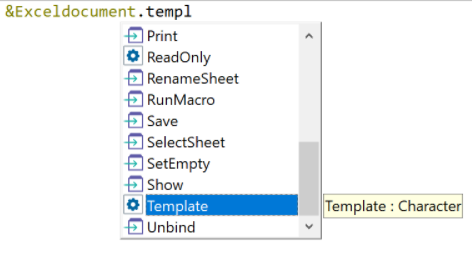

control. Template
&DataType.Template = Template
Type Returned:
Character
Where:
DataType
Is the name of the ExcelDocument or WordDocument type variable.
Template
Indicates the path and the name of the file that will be used as Template in subsequent calls to the Open method with a nonexistent file name.
The default value is the empty string. In this case, the default template will be used.
Generators: Java, .NET
Level: Variable
This property applies to variables based on the ExcelDocument, WordDocument Data Types.

If a template is defined and then deleted because it is no longer needed, to use the default template again, you have to call this property by sending an empty string as the parameter (“”).
This property applies only at run-time.
| Backlinks | |
| ExcelDocument data type | Open Method |